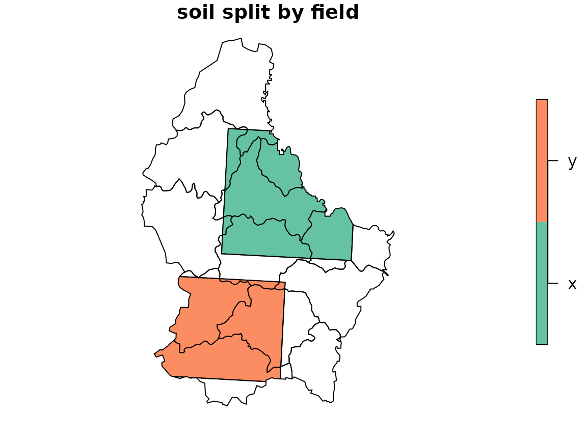
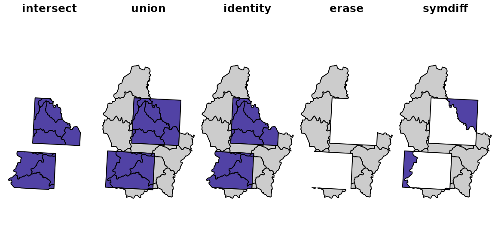
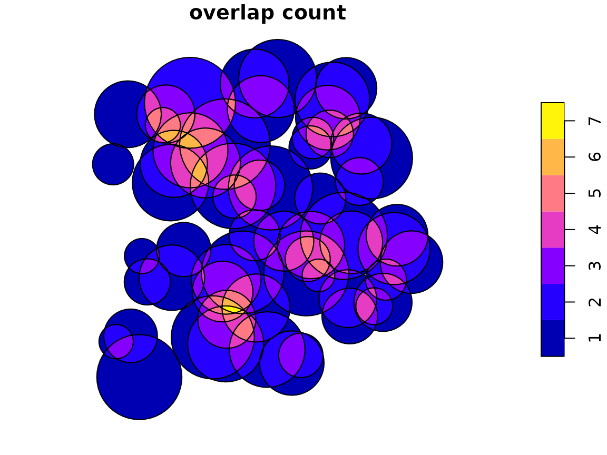

Two long-standing requests on the ‘sf’ issue tracker ask for overlays that pairwise clipping handles awkwardly:
- r-spatial/sf#1959 asks for an equivalent of the Esri Identity overlay: split the polygons of one layer by the boundaries of another and keep the attributes of both.
- r-spatial/sf#2242 asks for a faster and more robust n-ary intersection of a single layer: every piece of the plane with the number of polygons covering it, and which ones.
polymer answers both with the same two steps. polymer()
puts every edge of every input into one triangulation and records which
features cover each triangle, and fuse() dissolves the
triangles into one piece per distinct set of covering features. The rest
is bookkeeping on the origins of each piece.
This vignette also sets out where ‘sf’ and where ‘wk’ belong in such
a workflow. In short: prepare the inputs with ‘sf’, hand the ‘sf’
objects to polymer() as they are, do the bookkeeping on
polymer’s own tables, and convert back to ‘sf’ once, at the end.
Where conversion to wk belongs
polymer reads anything the ‘wk’ package can handle, ‘sf’ data frames
included, and converts the geometry to well-known binary itself.
Converting an ‘sf’ layer with wk::as_wkb() before calling
polymer() gains nothing: the conversion takes a fraction of
a millisecond for the example layers here, and passing the ‘sf’ data
frame lets polymer keep its attribute columns and check that all layers
share a coordinate reference system.
What matters is what has to happen before the geometry leaves ‘sf’, because ‘wk’ cannot do it:
-
Project to a planar CRS. polymer works in the
plane. Edges are straight lines in the input coordinates and crossings
are computed in those coordinates. With longitude and latitude the
result is a valid planar overlay in degrees, but ‘sf’ measures the same
polygons with geodesic edges (via ‘s2’, or ‘lwgeom’ when ‘s2’ is off),
so areas and comparisons no longer line up. Use
sf::st_transform()first. -
Repair and select. Use
sf::st_make_valid()if the input needs it, and drop attribute columns you do not want carried through.
After polymer(), everything needed for the overlay is
already in plain R structures: the layer attributes in
pool$layers, the covering features of each piece in
pieces$origins, and the triangles in
pool$mesh. There is no reason to go back to ‘sf’ in the
middle, for example to drop geometry with
sf::st_drop_geometry() or to measure areas. Pieces stay as
wk::wkb() until the end, where one call to
sf::st_as_sf() gives an ‘sf’ data frame for plotting,
writing or comparison.
The example layers soil and field are in
longitude and latitude, so they are projected first, here to the
European equal-area projection.
soil_p <- sf::st_transform(soil, 3035)
field_p <- sf::st_transform(field, 3035)Identity (sf#1959)
Identity keeps every part of the input layer x, split
along the boundaries of the identity layer y, with the
attributes of both. Parts of x outside y get
missing values for y’s attributes, and parts of
y outside x are dropped.
With polymer that is a filter on the origins of each piece: keep the
pieces with a layer-1 origin, and look up the attributes of the layer-1
and layer-2 features listed there in pool$layers.
identity_pieces <- function(pool, pieces) {
map <- do.call(rbind, lapply(seq_len(nrow(pieces)), function(i) {
o <- pieces$origins[[i]]
fx <- o$feature[o$layer == 1L]
fy <- o$feature[o$layer == 2L]
if (!length(fx)) return(NULL) # only in y: dropped
if (!length(fy)) fy <- NA_integer_ # only in x: y attributes missing
expand.grid(piece = i, x = fx, y = fy)
}))
out <- data.frame(pool$layers[[1L]][map$x, , drop = FALSE],
pool$layers[[2L]][map$y, , drop = FALSE])
rownames(out) <- NULL
out$geometry <- pieces$geometry[map$piece]
out
}The function only touches polymer’s tables, so it needs neither ‘sf’
nor ‘wk’ beyond indexing a wk::wkb() vector.
pool <- polymer(soil_p, field_p)
pool
#> polymer mesh:
#> Layers: 2
#> Features: 14
#> Triangles: 4166
#> Vertices: 2306 (21 at crossings)
#> Overlaps: 2224 triangles covered more than once, at most 2 deep
ident <- identity_pieces(pool, fuse(pool))
head(ident)
#> soil field
#> 1 D y
#> 2 A <NA>
#> 3 E <NA>
#> 4 C y
#> 5 B <NA>
#> 6 A x
#> geometry
#> 1 <MULTIPOLYGON (((4044330 2942275, 4044160 2942147, 4043615 2941663, 4043392 2941475, 4043216 2941346, 4043014 2941224...>
#> 2 <MULTIPOLYGON (((4057798 2939181, 4058361 2939412, 4058083 2941407, 4057571 2941276, 4057531 2941851, 4057564 2941977...>
#> 3 <MULTIPOLYGON (((4027533 2979908, 4027765 2979938, 4028097 2980021, 4028200 2980057, 4028313 2980123, 4028411 2980210...>
#> 4 <MULTIPOLYGON (((4023563 2962512, 4023482 2962427, 4023253 2961507, 4023258 2960769, 4023701 2960023, 4024480 2959486...>
#> 5 <MULTIPOLYGON (((4052867 2955215, 4052886 2954981, 4052905 2954906, 4052957 2954779, 4053099 2954548, 4053270 2954251...>
#> 6 <MULTIPOLYGON (((4036969 2990324, 4036981 2989737, 4037004 2989601, 4037104 2989172, 4037345 2989265, 4037461 2989323...>Now convert, once.

Checking against the pairwise workaround
The workaround in the issue intersects the layers, takes the
difference of x and the union of y, and binds
the two. Written with base rbind():
pairwise_identity <- function(x, y) {
x <- sf::st_set_agr(x, "constant")
y <- sf::st_set_agr(y, "constant")
inter <- sf::st_intersection(x, y)
rest <- sf::st_difference(x, sf::st_union(y))
rest[setdiff(names(y), attr(y, "sf_column"))] <- NA
rest <- sf::st_set_geometry(rest, attr(inter, "sf_column"))
rbind(inter, rest)
}
base <- pairwise_identity(soil_p, field_p)
c(polymer = nrow(ident), pairwise = nrow(base))
#> polymer pairwise
#> 25 25Both give the same pieces. Total area per combination of soil and field values agrees to rounding:
key <- function(d) paste(d$soil, d$field)
a_poly <- tapply(as.numeric(sf::st_area(ident)), key(ident), sum)
a_pair <- tapply(as.numeric(sf::st_area(base)), key(base), sum)
range(a_poly / a_pair[names(a_poly)] - 1)
#> [1] -6.050715e-13 8.231194e-13Checking with the mesh alone
The mesh can check itself, with no polygon geometry at all. Each
triangle’s area comes from its three vertices, and
pool$index says which features cover it, so the area of
every input feature is a sum over its triangles.
tri_area <- function(pool) {
v <- wkpool::pool_vertices(pool$mesh)
t <- wkpool::pool_triangles(pool$mesh)
i <- match(t$.vx0, v$.vx)
j <- match(t$.vx1, v$.vx)
k <- match(t$.vx2, v$.vx)
((v$x[j] - v$x[i]) * (v$y[k] - v$y[i]) -
(v$x[k] - v$x[i]) * (v$y[j] - v$y[i])) / 2
}
ta <- tri_area(pool)
idx <- pool$index
by_feature <- tapply(ta[idx$triangle], list(idx$layer, idx$feature), sum)
range(by_feature[1L, ] / as.numeric(sf::st_area(soil_p)) - 1)
#> [1] -7.035483e-13 1.989520e-13The triangles reproduce every soil polygon’s area, so splitting by
field lost nothing.
A point to settle
expand.grid() above gives one row for each pair of
covering x and y features. When features
within a layer overlap each other, a piece is covered by several
features of one layer, and it is repeated once per pair. The Esri
documentation does not describe this case, and whether to repeat,
aggregate or reject such pieces is a choice for the caller. The soil and
field layers have no internal overlaps, so it does not arise here.
One mesh, the whole overlay family
Identity is one of several two-layer overlays that GIS software offers side by side: Intersect, Union, Identity, Erase and Symmetrical Difference. Pairwise clipping computes each one separately, from the geometry. With polymer they are all filters on the same pieces, decided only by whether a piece has a layer-1 origin, a layer-2 origin, or both. The mesh is built once.
pieces <- fuse(pool)
in_x <- vapply(pieces$origins, function(o) any(o$layer == 1L), logical(1))
in_y <- vapply(pieces$origins, function(o) any(o$layer == 2L), logical(1))
keep <- list(
intersect = in_x & in_y,
union = in_x | in_y,
identity = in_x,
erase = in_x & !in_y,
symdiff = xor(in_x, in_y)
)Pieces covered by a field polygon are filled purple, the rest grey.
op <- par(mfrow = c(1, 5), mar = c(0, 0, 1.5, 0), xaxt = "n", yaxt = "n", bty = "n")
for (nm in names(keep)) {
wk::wk_plot(pieces$geometry, border = NA)
title(nm)
wk::wk_plot(pieces$geometry[keep[[nm]]], add = TRUE,
col = c("grey80", "#5142A5")[in_y[keep[[nm]]] + 1L])
}
par(op)Each filter’s area agrees with the corresponding ‘sf’ operation on the unioned layers:
area <- as.numeric(sf::st_area(sf::st_as_sfc(pieces$geometry)))
ux <- sf::st_union(soil_p)
uy <- sf::st_union(field_p)
sf_area <- function(g) sum(as.numeric(sf::st_area(g)))
cbind(polymer = vapply(keep, function(k) sum(area[k]), numeric(1)),
sf = c(sf_area(sf::st_intersection(ux, uy)),
sf_area(sf::st_union(ux, uy)),
sf_area(ux),
sf_area(sf::st_difference(ux, uy)),
sf_area(sf::st_sym_difference(ux, uy))))
#> polymer sf
#> intersect 1113655938 1113655938
#> union 2893864227 2893864227
#> identity 2564810460 2564810460
#> erase 1451154522 1451154522
#> symdiff 1780208288 1780208288The filters work on any number of layers in the same way. A piece’s
origins is the full record of what covers it, so any rule
over layers and features, such as “in layer 1 and layer 3 but not layer
2”, is a logical expression on that table rather than a sequence of
clipping operations.
n-ary intersection of one layer (sf#2242)
For a single layer, fuse(polymer(x)) is the n-ary
intersection: one piece per distinct set of covering features, with the
count in n and the features in origins. The
example is overlapping discs, with one disc duplicated, because the loop
posted in the issue stops on duplicate geometries.
make_discs <- function(n, seed = 1) {
set.seed(seed)
pts <- sf::st_as_sf(data.frame(x = runif(n, 0, 100), y = runif(n, 0, 100),
id = seq_len(n)),
coords = c("x", "y"))
sf::st_buffer(pts, dist = runif(n, 5, 15), nQuadSegs = 12)
}
discs <- make_discs(60)
discs <- rbind(discs, discs[1, ])
pool <- polymer(discs)
pool
#> polymer mesh:
#> Layers: 1
#> Features: 61
#> Triangles: 5932
#> Vertices: 3268 (388 at crossings)
#> Overlaps: 4554 triangles covered more than once, at most 7 deep
pieces <- fuse(pool)
table(pieces$n)
#>
#> 1 2 3 4 5 6 7
#> 47 97 104 72 33 13 3The duplicate needs no special handling: discs 1 and 61 cover the same triangles, so they appear together in the origins of every piece inside disc 1.
has_both <- vapply(pieces$origins,
function(o) all(c(1, 61) %in% o$feature), logical(1))
pieces$origins[[which(has_both)[1L]]]
#> layer feature
#> 1 1 1
#> 2 1 19
#> 3 1 25
#> 4 1 61The input id column is in pool$layers, so
mapping origins to ids is again plain indexing. Then convert once and
plot the overlap count.
pieces$ids <- lapply(pieces$origins, function(o) pool$layers[[1L]]$id[o$feature])
nary <- sf::st_as_sf(pieces[c("n", "ids", "geometry")])
plot(nary["n"], main = "overlap count")
Checking against st_intersection()
sf::st_intersection() on one layer computes the same
partition. It returns one row per piece, and can include points, lines
and collections where boundaries touch, while polymer returns one
MULTIPOLYGON per covering set, so rows do not compare directly. Area per
overlap count does:
sf_nary <- sf::st_intersection(discs)
types <- table(sf::st_geometry_type(sf_nary))
types[types > 0]
#>
#> POINT LINESTRING POLYGON MULTILINESTRING
#> 4 22 283 26
#> MULTIPOLYGON GEOMETRYCOLLECTION
#> 78 69
a_poly <- as.numeric(sf::st_area(nary))
rbind(polymer = tapply(a_poly, nary$n, sum),
sf = tapply(as.numeric(sf::st_area(sf_nary)), sf_nary$n.overlaps, sum))
#> 1 2 3 4 5 6 7
#> polymer 3149.089 3115.716 2030.523 878.2377 356.7628 85.49982 10.31411
#> sf 3149.089 3115.716 2030.523 878.2377 356.7628 85.49982 10.31411Because the pieces partition the covered area, two more identities hold: area weighted by overlap count equals the summed area of the discs, and plain area equals the area of their union.
c(sum(nary$n * a_poly) / sum(as.numeric(sf::st_area(discs))),
sum(a_poly) / as.numeric(sf::st_area(sf::st_union(discs)))) - 1
#> [1] 2.220446e-16 6.661338e-16Timing
The reason for the issue is speed. The timings below were recorded once (on a Linux cloud machine, GEOS 3.12.1) rather than run when the vignette is built, because the ‘sf’ call becomes slow as the number of discs grows.
for (k in c(50, 100, 200)) {
p <- make_discs(k, seed = k)
t_mesh <- system.time(pool <- polymer(p))[["elapsed"]]
t_fuse <- system.time(fuse(pool))[["elapsed"]]
t_sf <- system.time(r <- sf::st_intersection(p))[["elapsed"]]
cat(k, t_mesh, t_mesh + t_fuse, t_sf, nrow(r), nrow(fuse(pool)), "\n")
}| discs |
polymer() (s) |
polymer() + fuse() (s) |
st_intersection() (s) |
sf rows | polymer pieces |
|---|---|---|---|---|---|
| 50 | 0.04 | 0.18 | 0.07 | 222 | 201 |
| 100 | 0.06 | 0.43 | 1.38 | 1611 | 1059 |
| 200 | 0.24 | 1.32 | 71.99 | 19199 | 4467 |
For small inputs the two are comparable, and for the Identity example
above the pairwise ‘sf’ route is faster. As overlaps multiply, the cost
of pairwise clipping grows much faster than the cost of one
triangulation. Most of polymer’s time is in fuse(), which
rebuilds polygons from the mesh; the mesh and its index alone, enough
for counts and areas, are cheaper still.
Precision
Crossings are computed in double precision, and vertices are shared on exact coordinate equality. The pieces form a partition by construction, so they cannot overlap or leave gaps between each other, but the position of each crossing carries ordinary floating-point rounding. polymer does not use exact arithmetic.